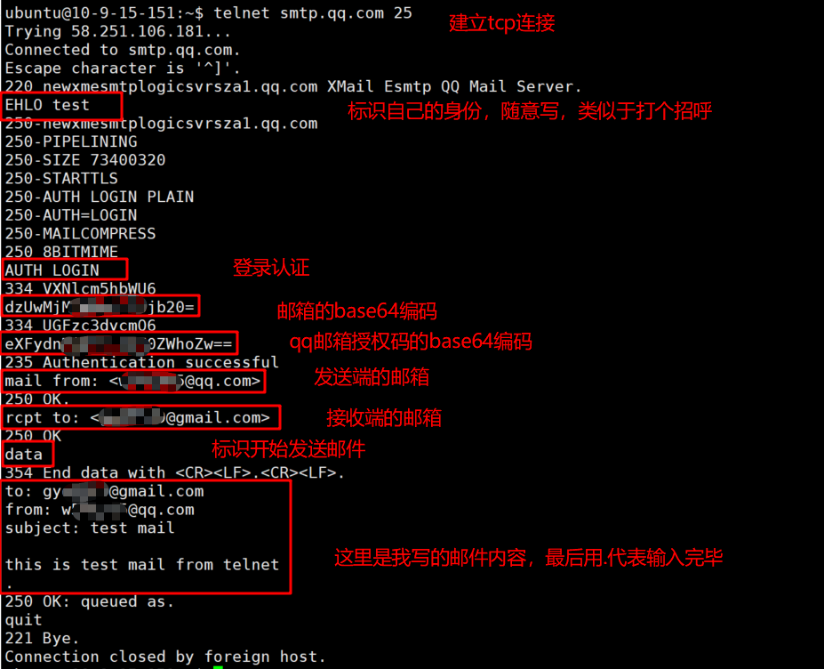
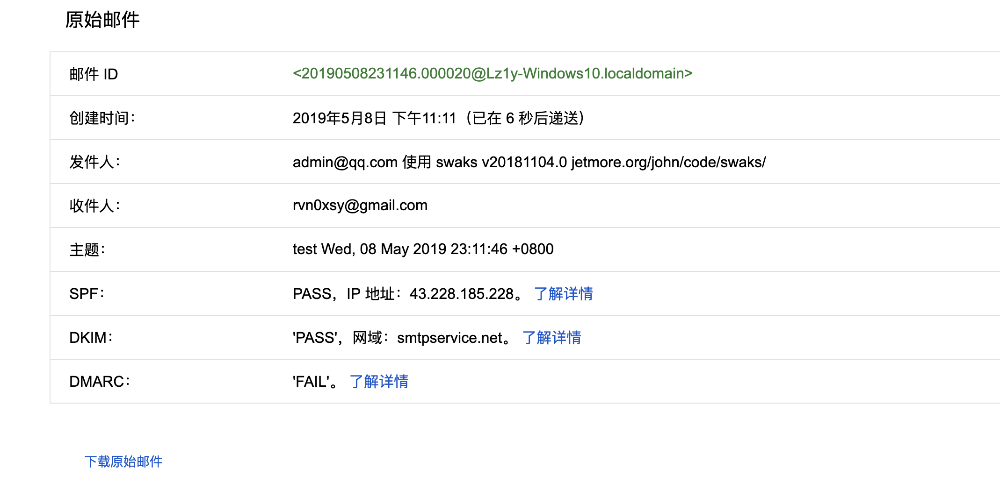

MIME 邮件格式
SMTP 发信

SPF
What is SPF
(Sender Policy Framework) 的缩写，一种以 IP 地址认证电子邮件发件人身份的技术，是非常高效的垃圾邮件解决方案。
接收邮件方会首先检查域名的 SPF 记录，来确定发件人的 IP 地址是否被包含在SPF记录里面，如果在，就认为是一封正确的邮件，否则会认为是一封伪造的邮件进行退回。
SPF 记录是什么样的？
SPF 记录必须遵循一定的标准，以便服务器理解其内容。如下是 SPF 记录核心组成部分的示例：
v=spf1 ip4=192.0.2.0 ip4=192.0.2.1 include:examplesender.email -all
这个例子让服务器知道这是什么类型的记录，声明对这个域被批准的 IP 地址和第三方，并告知服务器如何处理不符合要求的电子邮件。我们分别说明各组成部分是如何实现这一点的：
v=spf1告诉服务器这里包含一条 SPF 记录。每一条 SPF 记录都必须以这个字符串开始。- 然后是 SPF 记录的“客人名单”部分，即授权 IP 地址。在本例中，SPF 记录告诉服务器，ip4=192.0.2.0 和 ip4=192.0.2.1 被授权代表该域发送电子邮件。
include:examplesender.net是 “include”（包含）标记的示例，该标记告诉服务器，有哪些第三方组织被授权代表该域发送电子邮件。这个标记表示，被包含域（examplesender.net）的 SPF 记录内容应被检查，其中包含的 IP 地址也应被视为已授权。一条 SPF 记录中可包含多个域，但这个标记仅适用于有效的域。- Finally,
-all告诉服务器，SPF 记录中未列出的地址没有被授权发送电子邮件并应被拒绝。
这里的其他可选项包括 ~all：表示未列出的电子邮件将被标记为不安全邮件或垃圾邮件，但仍会被接受；不那么常见的是 +all：表示任何服务器都可以代表该域发送电子邮件。
SPF Record evaluation
邮件服务器中的 SPF 模块在对 SPF 记录中的 terms 进行估值后，向邮件服务器返回认证 (authentication) 结果。
SPF 中有 2 种 terms：mechanisms 以及 modifiers。
SPF 认证结果为以下其中之一：
None: 未能有效地解释域名，或者域名上未找到 SPF 记录；Neutral: 发起请求的主机的 IP 地址是否允许并未确定；Pass: 发起请求的主机的 IP 地址被允许；Fail: 发起请求的主机的 IP 地址不被允许；Softfail: 发起请求的主机的 IP 地址可能不被允许；Temperror: SPF 模块在检查时碰到临时网络错误；Permerror: 域名上发布的 SPF 无法解释。这种情况，域名管理员须修复此错误。
如果一直到 SPF 记录的末尾都没有找到匹配，返回 neutral。这是 SPF 估值的缺省值。
SPF qualifiers
SPF qualifier 前置于 SPF mechanism，用来指定该 SPF mechanism 的估值结果。以下是所有的 qualifiers，以及对应的结果：
"+"pass"-"fail"~"softfail"?"neutral
SPF mechanisms
有两种 SPF mechanisms：基本 mechanisms 和指定发送者 mechanisms。
- 基本 mechanisms 有
all和include。 - 指定发送者 mechanisms 有
a，mx，ptr，ip4，ip6，和exists。 include可以让 SPF 记录把定义在另外一个 SPF 记录中的第三方 IP 地址包括进来。
要确保 SPF 记录有效，需要注意如下几点：
- 每个域不能关联多条 SPF 记录。
- 记录必须以 all 部分结束，或包含一个
redirect:部分（表示该 SPF 记录由另一个域托管）。 - SPF 记录不能包含大写字母。
SPF modifiers
SPF 有两个 modifiers：redirect 和 exp。
- SPF modifiers 是可选的。
- 每条 SPF record 中的任何
SPF modifier只能够使用一次。 - 未知的 modifiers 会被忽略。
redirect=<domain>：在 domain 上面的 SPF 记录会代替当前的 SPF 记录。exp=<domain>：如果 SPF 记录估值失败，并且存在 exp modifier，SPF 返回一个串来解释原因。
EXAMPLE
如：
如果 mail.smtp2go.com 是我的邮件服务器，那么 gmail 服务器收到的源 IP 也肯定是 mail.smtp2go.com 的 IP。
gmail 会校验邮件发送者的 IP 是否存在于 smtp.from 的域名 spf 配置列表里。
使用 Swaks
swaks --to rvn0xsy@gmail.com --from admin@qq.com --ehlo gmail.com --body hello --server mail.smtp2go.com -p 2525 -au <USER> -ap <PASS>
smtp.from 就是 admin@qq.com，和 mail.smtp2go.com 的 IP 肯定不同，所以 SPF 校验失败，而校验失败的邮件，会有很高的几率被扔到垃圾邮件中。
默认情况下，如果未设置 Mail.From 也就是邮件头的 From，则会使用 smtp.from 作为 Mail.From。

What is a DNS TXT record?
DNS“文本”(TXT) 记录允许域管理员将文本输入到域名系统 (DNS) 中。TXT 记录最初的目的是用作存放人类可读笔记的地方。但是，现在也可以将一些机器可读的数据放入 TXT 记录中。 一个域可以有许多 TXT 记录。
https://www.cloudflare.com/zh-cn/learning/dns/dns-records/dns-txt-record/
TXT 记录示例：
| example.com | record type | value | TTL |
|---|---|---|---|
| @ | TXT | This is an awesome domain!Definitely not spammy. | 32600 |
如今，DNS TXT 记录的两个最重要用途是防止垃圾邮件和域名所有权验证，尽管 TXT 记录最初并非为这些用途而设计。
查询 SPF
# nslookup -q=txt 域名
# nslookup -type=txt 域名，如 huawei 的
PS C:\Users\Zzzz> nslookup -type=txt huawei.com
服务器: public1.114dns.com
Address: 114.114.114.114
非权威应答:
huawei.com text =
"MS=C4F6A693225CC6E058F6C9C39FD728C06C43E597"
huawei.com text =
"N3U/UqKcdI+8rthQEYTbph+m6MCg7+IW43PP5SuPxww="
huawei.com text =
"v=spf1 ip4:45.249.212.32 ip4:45.249.212.35 ip4:45.249.212.255 ip4:45.249.212.187/29 ip4:45.249.212.191 ip4:168.195.93.47 ip4:185.176.79.56 ip4:119.8.179.247 ip4:119.8.89.136/31 ip4:119.8.89.135 ip4:119.8.177.36/31 ip4:119.8.177.38 -all"
huawei.com text =
"v=DMARC1;p=none;rua=mailto:dmarc@edm.huawei.com"
# 没有 SPF
PS C:\Users\Zor0> nslookup
默认服务器: UnKnown
Address: 192.168.170.16
> set q=txt
> 5000.cn
服务器: UnKnown
Address: 192.168.170.16
5000.cn
primary name server = ns3.dns.com
responsible mail addr = admin.dns.com
serial = 1546510465
refresh = 7200 (2 hours)
retry = 3600 (1 hour)
expire = 1209600 (14 days)
default TTL = 1800 (30 mins)
>
SPF 的绕过
我们只需要让 smtp.from 域名中配置的 txt 记录和发信 IP 一直那么就可以通过 SPF 校验。又或者有的域名没有配置 SPF 那么也可以进行伪造。
由于邮件显示的是 Header 中的 From 不是 smtp.from，因此可以将 smtp.from 设置为正常的邮件服务器地址，伪造一个 Mail.From 即可。
swaks --to payloads@aliyun.com --from xx@smtp2go.com --h-From: '管理员<admin@qq.com>' --ehlo gmail.com --body hello --server mail.smtp2go.com -p 2525 -au <USER> -ap <PASSS>
Gmail 接收到这封邮件后，会校验 --from xx@smtp2go.com 中的 smtp2go.com 是否等于 mail.smtp2go.com 的 IP，由于是相等的，所以完成了 SPF 的校验。
而 DKIM 是校验邮件完整性的，smtp2go 与 Gmail 直接使用的是 TLS，不会发生什么问题。

DKIM 与 DMARC
域名密钥识别邮件（DomainKeys Identified Mail，DKIM）是一套电子邮件认证机制，使用公开密钥加密邮件，以检测邮件是否是伪造或被篡改。【完整性校验】
通常发送方会在电子邮件的标头插入 DKIM-Signature 及电子签名, 而接收方则透过 DNS 查询得到公钥后进行验证。
DMARC 建立在发件人策略框架 (SPF)和域名识别邮件 (DKIM)协议之上。如果这两种身份验证方法都不通过，DMARC 策略将决定如何处理该消息。DMARC 要求域名所有者在 DNS 记录中设置 SPF 记录和 DKIM 记录，并明确声明对验证失败邮件的处理策略。
以上两种机制也是现有的电子邮件安全机制，不过以 SPF 策略为主。